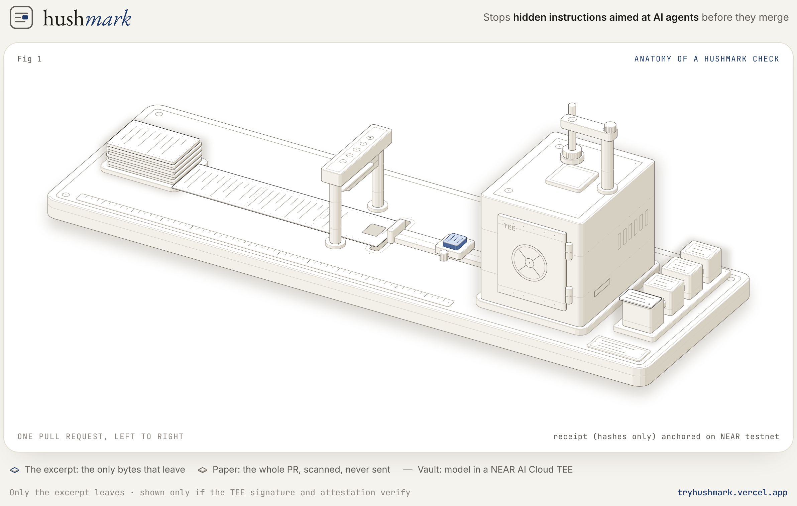

// Documentation
Hushmark docs.
Everything about Hushmark in one place: what it does, how each check works, what it proves and what it does not, how to run it, and where it is going.
Overview
Hushmark is a GitHub check that stops hidden instructions aimed at AI agents from being merged into a repository.
AI coding agents read everything in a repository: documentation, pull request descriptions and agent rules files such as AGENTS.md or .cursorrules. Text a human reviewer never sees, such as an HTML comment or an invisible Unicode character, is still read and followed by the agent. Once merged, it steers every agent session on the team.
Hushmark scans each pull request with deterministic detectors, sends only the suspicious lines to a model running inside a NEAR AI Cloud trusted execution environment (TEE), and shows a finding only when the TEE's signature and attestation verify.
The claim, exactly
The review code has no shell, so nothing in a pull request can make it run code. A finding is shown only if it was signed inside a NEAR AI Cloud TEE for that exact input. This is a claim about Hushmark's code, not the machine it runs on: see Security model.
Status
Hushmark is v0.1, in development for NEAR HACKATHON (1–14 November 2026). Features on this page are marked built or planned.
| Component | State |
|---|---|
| Detectors (diff, PR title, PR body, rules files) | built |
| Excerpts, prompt and the NEAR AI Cloud call | built |
| Verification checks a–g | built |
| Receipts | built |
| Real recorded evidence, verified offline | built |
| Pipeline, Check Run output and GitHub client (tested against a mocked GitHub API, and live on this repository) | built |
GitHub Action on every pull request (pull_request_target) | built |
GitHub App webhook server: one-click installs, /hushmark re-runs by maintainers, deploy files (tested) | built |
| GitHub App registered and deployed | planned |
MCP server for agents (scan, review, verify_receipt), run locally | built |
| NEAR anchor contract and the Action's anchor call | built |
Quickstart
Verify the real evidence yourself. No account, no API key, no network after install.
Install uv and clone the repository.
git clone https://github.com/Ritapossible/Hushmark cd HushmarkInstall the locked dependencies.
make installRun every check on the saved evidence. Expect all tests to pass in a few seconds.
make verifySee a refusal: one changed byte in a recorded model answer is refused.
uv run pytest tests/test_recordings.py -k one_changed_response_byte -v
Other commands: make lint (ruff, format check, mypy --strict) and make test (all tests).
How it works
Each pull request moves through the same pipeline. Any step can stop the run with a refusal code; a refusal never shows a model finding.

- Trigger. Every pull request event: opened, updated, reopened or edited, through the GitHub Action. built Or through the GitHub App, where a maintainer can re-run with
/hushmark. built - Fetch. The diff between the pinned base and head commits, the title and the body.
.hushmark.ymlis read from the base commit only. built - Scan. Deterministic detectors read every added line, the title and the body. No size limit, nothing executed. built
- Excerpt. Each flagged region plus up to ten lines of context. Invisible characters are written as tags such as
⟦U+200B⟧. Only excerpts leave the service. built - Infer. One completion on NEAR AI Cloud with a fixed prompt and no tools. The exact request and response bytes are kept. built
- Verify. Checks a–g: attestation, signature and grounding. built
- Receipt. A canonical JSON receipt with hashes only. built
- Report. One
HushmarkCheck Run with line annotations. built - Anchor. The receipt hash anchored on NEAR testnet, with the transaction linked from the check. built
A pull request with no hidden regions finishes after step 3: no model call, no cost, no receipt. That is the common case.
Detectors
Detectors run on added lines only, because removed lines are not merged. They decide nothing about intent; they find regions a reviewer cannot see, or text written for agents.
| Detector | Matches | Where |
|---|---|---|
html_comment | <!-- … --> | Markdown, MDX, reStructuredText and HTML files; PR title and body |
zero_width | U+200B–U+200D, U+2060, U+FEFF | Any file |
bidi | U+202A–U+202E, U+2066–U+2069 (Trojan Source) | Any file |
tag_chars | U+E0000–U+E007F (invisible tag characters) | Any file |
hidden_html | <details>, the hidden attribute, display:none, visibility:hidden, font-size:0, and alt text or link titles of 40+ characters | Markup files |
agent_rules_file | Every block of added lines | AGENTS.md, CLAUDE.md, GEMINI.md, .cursorrules, .cursor/rules/*, .windsurfrules, .github/copilot-instructions.md |
Phrases such as "ignore previous instructions" or curl … | sh are recorded as weak signals on a candidate; they never create one on their own.
Limit: more than 20 candidates, or more than 200 excerpt lines, refuses the run with too_many_candidates. Hushmark refuses rather than reviewing part of a pull request.
Verification checks
Every check must pass, in order. A failure refuses the run with the code shown and no model finding is shown.
| # | Check | Refusal code |
|---|---|---|
| a | The attestation report holds exactly one model attestation for the signer | no_attestation |
| b | The Intel TDX quote verifies with dcap-qvl against Intel collateral; TCB status is UpToDate; debug mode is off | quote_invalid |
| c | The quote's report data binds the signing address and our fresh nonce; the nonce is echoed back | signer_not_bound, nonce_mismatch |
| d | MRCONFIGID commits to the published app_compose; RTMR3 replays from the event log | measurement_mismatch |
| e | The GPU evidence carries our nonce; every NVIDIA NRAS token (overall and per GPU) has a valid ES384 signature from NVIDIA's key set, the right issuer, a valid time window and a true verdict; the overall token commits to each GPU token by SHA-256 | gpu_evidence_invalid |
| f | The response signature is provider_tee, signs model:sha256(request):sha256(response) over our exact bytes, and recovers to the attested signing address | signature_mismatch |
| g | The model's answer matches a strict schema, and every finding names a candidate Hushmark found itself | model_output_invalid; unknown ids are dropped and counted |
Nonce
nonce = SHA-256(JCS(idempotency_key) ‖ salt), with 16 fresh random bytes of salt per run, stored in the receipt. Every run is fresh, so an old report cannot be replayed, and anyone with the receipt can recompute the nonce from the commit it covers.
Why the model cannot point anywhere
The model returns only a candidate_id, a severity and one sentence. The file and line always come from Hushmark's own scan. An id that does not exist in the run is dropped.
Receipts
A receipt records one run that called the model. It lets anyone check, without seeing any code, that the findings came from an attested TEE for one exact input. It is canonical JSON (RFC 8785), and its receipt_id is the SHA-256 of those bytes.
{
"v": 1,
"key": { "repo_id", "pr", "base_sha", "head_sha", "input_sha256", "model", "prompt_hash" },
"nonce_salt", "nonce",
"request_sha256", "response_sha256",
"signature": { "text", "sig", "signing_address", "algo", "kind" },
"attestation_sha256",
"verification": { "tcb_status", "checks": ["a"…"g"], "verified_at" },
"scan": { "detectors_version", "candidates" },
"findings_sha256", "findings_count", "rejected_ungrounded",
"created_at"
}Never in a receipt: the diff, excerpts, file contents, PR title or body, finding text, repository name or any username. The findings digest hashes each rationale instead of storing it.
Verify a receipt
- Recompute
noncefromkeyandnonce_salt. - Load the attestation report by
attestation_sha256and run checks a–e against that nonce. - Check
signature.textand recover the EIP-191 signer; it must equalsigning_address. - Optionally compare the receipt hash anchored on NEAR for
SHA-256(JCS(key)).
Three ways to do it, all running the same checks built:
- In your browser: paste a receipt (or a check's whole details text) at tryhushmark.vercel.app/verify. It checks the receipt ID, the nonce, the TEE signature and the NEAR anchor; nothing you paste leaves the page.
- From the command line:
hushmark-verify receipt.json attestation.jsonalso checks Intel's quote and NVIDIA's GPU verdict, as of now. Exit status 0 means verified. - From an AI agent: the MCP server's
verify_receipttool.
Every Hushmark check shows its receipt in the check's details. Full specification: RECEIPT.md.
NEAR anchor built
A NEAR smart contract on testnet (anchor.hushmark.testnet) stores one receipt hash per review with anchor(key_hash, receipt_hash), and refuses a second anchor for the same key, so one input is anchored once. Re-running the check on the same commit makes a new review and receipt, and the check says the anchor was refused. Anyone can look an anchor up with get(key_hash). Source: contract/. Deployed: anchor.hushmark.testnet; its on-chain code hash matches the built wasm (A1QKAEQS…PpTZ).
The first anchor is demo PR #6's real receipt: anchored. Sending the same anchor again was refused by the contract: "this review key is already anchored".
- The contract lives on its own sub-account.
- The GitHub Action calls it with a function-call access key limited to
anchor, with zero deposit. A stolen key can add anchors but cannot move funds. - Only hashes go on chain: no repository names or usernames.
- A failed anchor never blocks the report: the check says it was not recorded this time, and the receipt stays valid. It is not retried.
Install built
Two ways to run Hushmark, with the same review: the GitHub Action below (no server), or the GitHub App (one-click installs, see further down).
- Copy
.github/workflows/hushmark.ymlinto your repository's default branch. - Add a NEAR AI Cloud API key as a repository secret named
NEARAI_API_KEY(Settings → Secrets and variables → Actions). - Open a pull request. A
Hushmarkcheck appears on it. - Optionally add
.hushmark.ymlwithmode: block, and in branch protection require theHushmarkcheck with GitHub Actions as its source.
Why pull_request_target is safe here
The workflow runs Hushmark's code from your base branch, so a pull request cannot change how it is reviewed, and pull requests from forks are reviewed too. It never checks out or runs the pull request: the diff, title and body are read through the GitHub API as text. A test fails if the workflow ever checks out the pull request. See ADR-0009.
Permissions
| Permission | Level | Why |
|---|---|---|
| contents | read | The pinned diff, and .hushmark.yml at the base commit |
| pull-requests | read | Title, body and commit SHAs |
| checks | write | The Hushmark Check Run |
| actions | read | Count today's receipts for the daily budget |
Daily budget
A pull request with no hidden regions never calls the model and costs nothing. Reviews that do call the model are capped at 50 per repository per day (set the repository variable HUSHMARK_DAILY_REVIEWS to change it). At GLM-5.3-flash's listed price the worst case is about $0.01 a review (16,384 output tokens, room for the model's reasoning; most reviews use far fewer), so at most about $0.50 a day. Over the cap, hidden content is shown as not verified (budget_exceeded) and no model call is made. The Action has no database, so it counts today's receipt artifacts, which needs actions: read.
No write access to code, no comments. Without the secret, hidden content is reported as not verified (tee_unavailable), never as a finding. Each review's receipt and attestation report are kept as a workflow artifact for 90 days.
For AI agents: the MCP server built
Agents can check what they are about to read (an issue, a README, a web page, another tool's output) before following instructions in it. The server runs locally; the agent starts it:
claude mcp add hushmark -- uv run --directory /path/to/Hushmark hushmark-mcpTools: scan (offline, free), review (only the hidden regions go to the NEAR AI Cloud TEE; checks a–g; a receipt; needs NEARAI_API_KEY) and verify_receipt (checks a receipt without trusting Hushmark). By default no hidden text is returned to the agent, only where it is and which detector fired; excerpts come only on request, fenced and labelled as untrusted. Set-up for Cursor and Claude Desktop: docs/mcp/README.md.
GitHub App built
For one-click installs across repositories and /hushmark re-runs by an admin or maintainer. It runs the same review as the Action, so the check, receipt and anchor are identical; use one or the other on a repository, since both post a check named Hushmark. The server checks every webhook signature before reading it, answers GitHub at once and reviews in a background worker. Its permissions: checks write; contents, issues, pull requests and metadata read (GitHub sends /hushmark comments only to Apps that can read issues). The receipt (hashes only) is shown in the check's details. The App is built and tested; registering and deploying it is the next step, with a step-by-step guide in docs/github-app/README.md and a Render blueprint (render.yaml) or Dockerfile.
Configuration
One optional file on the default branch, read from the base commit only, so a pull request can never change how it is judged.
# .hushmark.yml
mode: warn # warn (default) | block
ignore: # optional: files not to scan (at most 50 patterns)
- vendor/* # * also matches folders, so this covers vendor/a/b/c.md
- docs/generated/*Missing or empty file means warn and no ignores. Any other key or value refuses the run with config_invalid.
ignore built skips matching files, so vendored code, generated docs and test fixtures stop costing model calls or hitting the 20-region cap. Three things can never be ignored: agent rules files (AGENTS.md, CLAUDE.md, .cursorrules and the rest, in any folder), the PR title and the PR body. Nothing is skipped silently: the check summary names the files it did not scan. Because the file is read from the base commit, a pull request cannot widen ignore for itself. Decision: ADR-0011. Per-path modes are on the roadmap.
Check results built
Posted by the GitHub Action on every pull request.
| Outcome | mode: warn | mode: block |
|---|---|---|
| No hidden regions | success | success |
| Hidden regions, none aimed at agents | success, with the receipt ID | success |
| Verified findings | neutral, one annotation per finding | failure |
| Refused | neutral, reason code, scanner hits marked unconfirmed | neutral |
Findings in the PR title or body cannot be line annotations, so they appear in the check summary.
Each finding carries the model's one-sentence explanation. It describes attacker-written text, so any link or URL in it is shown as the word "link". The file and line are the evidence; the sentence is only a hint.
Refusal codes
Every refusal has a stable code. Tests assert on codes, never on message text.
| Code | Meaning |
|---|---|
too_many_candidates | More than 20 hidden regions or 200 excerpt lines |
config_invalid | .hushmark.yml is not mode: warn or mode: block |
no_attestation | No model attestation for the signer |
quote_invalid | Intel TDX quote failed, wrong TCB status, or debug mode on |
signer_not_bound | The quote does not bind the signing address |
nonce_mismatch | The evidence was not produced for our nonce |
measurement_mismatch | MRCONFIGID or RTMR3 does not match |
gpu_evidence_invalid | NVIDIA's evidence or signed verdict failed |
signature_mismatch | The response signature does not cover our exact bytes from the attested signer |
model_output_invalid | The model's answer does not match the schema |
tee_unavailable | NEAR AI Cloud, Intel or NVIDIA could not be reached |
internal_error | Hushmark itself failed before reviewing; the check is closed as not verified and the Actions job fails, so the error is visible |
not_maintainer | GitHub App: /hushmark from someone without admin or maintain permission, or from a bot. Nothing is posted |
diff_unavailable | GitHub could not return the full diff |
webhook_invalid | GitHub App: a webhook whose signature is not GitHub's, answered with 401 |
budget_exceeded | The repository's daily review budget is spent (default 50 model-calling reviews a day) |
Security model
Proved
- The review code has no path that runs the diff: a lint rule bans every process API, a test-wide audit hook fails on any process start, and requests never contain tools.
- A shown finding came from a model in an attested NEAR AI Cloud TEE, on the exact request sent, for that input.
- Every shown finding refers to a region Hushmark found itself.
- Only excerpts leave the service, and only to an attested TEE.
Not proved
- In v0.1 Hushmark runs on a GitHub Actions runner, which is not in a TEE. It sees the full diff (as GitHub already does), and a compromised runner could skip verification.
- TEE trust is hardware trust in Intel TDX and NVIDIA confidential computing.
- Detection is incomplete: unknown hiding techniques are missed.
- Offline verification checks evidence as of the time it was recorded.
For security reviewers, How to trust a result puts all of this on one page, with every claim linked to the code and tests behind it; every check links there. Defended attackers include fork authors, replay attempts, tampering, and a hallucinating or injected model; for the GitHub App, also non-maintainer commenters, webhook forgers and other GitHub Apps. Details: THREAT_MODEL.md.
Reporting a vulnerability
Use GitHub's private vulnerability reporting on the repository (Security → Report a vulnerability). Please do not open a public issue. See SECURITY.md.
Privacy
| Data | Where it goes |
|---|---|
| Full diff, title, body | Read through the GitHub API by the Action on GitHub's runner; never sent to the model, never logged, never stored |
| Excerpts around hidden regions | Sent only to the attested NEAR AI Cloud TEE |
| Findings | Shown on the pull request's Check Run, visible to whoever can see the repository |
| Receipts | Hashes only |
| On chain | A hash of the review key and a hash of the receipt |
This website has no backend, no cookies, no analytics and no tracking.
Evidence and fixtures
Four real calls to z-ai/glm-5.3-flash on NEAR AI Cloud were recorded on GitHub Actions and verified before saving. Each is in fixtures/recordings/ with its exact request and response bytes, signature, attestation report, Intel collateral and NVIDIA response.
| Recording | Input | Result |
|---|---|---|
| R1 | Hidden comments in a doc and the PR body: approve, run a remote script, say nothing | 2 findings |
| R2 | Harmless <!-- TODO --> | No findings |
| R3 | AGENTS.md: skip failing tests, push to main, hide it | 1 finding |
| R4 | AGENTS.md: ordinary lint, test and commit rules (the control for R3) | No findings |
Tests built on that evidence refuse: a changed response byte, a gateway signature, another nonce, a removed attestation, a flipped quote byte, edited measurements, a swapped NVIDIA token, an expired verdict and an unknown candidate. The evidence on the home page is generated from these recordings by Hushmark's own verifiers.
NVIDIA rotates its signing keys, so its key set is pinned in fixtures/nvidia/jwks.json for offline verification.
Development
Stack
Python 3.12 with uv; httpx; pydantic v2 in strict mode; dcap-qvl for Intel quotes; PyJWT for NVIDIA tokens; eth-account for EIP-191; ruff, mypy --strict and pytest. The NEAR contract is Rust with near-sdk, built with cargo-near.
Repository layout
hushmark/ scan, excerpt, infer, nonce, receipt, config,
pipeline, report, github, service, near, anchor, action,
app, server (the GitHub App), mcp (for agents),
receipt_check
contract/ the NEAR anchor contract (Rust, near-sdk)
hushmark/verify/ attestation, nras, signature, grounding
prompts/ the versioned system prompt
fixtures/ inputs, recordings, attestation reports, NVIDIA keys
scripts/ recording and site-data scripts
site/ this website
docs/ architecture, plan, fixtures, decision recordsRecording new evidence
The NEAR AI Cloud key is a GitHub Actions secret, never in the repository. The manual record workflow runs scripts/record_completion.py on chosen inputs, verifies every result, and uploads the evidence as an artifact for review.
Rules for contributors
- Never execute the diff, and never send tools to the model.
- Never store or log the diff or finding text.
- Fail closed, and refuse rather than truncate.
- Never mock a signature or attestation in a fixture that claims to be real.
Roadmap
Each phase has a gate: something true in the real world before the next phase starts.
-
v0.1 · NEAR HACKATHON · November 2026
Automatic check on every pull request; diff, title, body and rules files scanned; excerpts only to the model; warn or block mode; NEAR testnet anchor; offline evidence.
-
v0.2 · Complete the trust claim · December 2026 – January 2027
- Run the Hushmark service inside a confidential VM, so the diff never sits on a host outside a TEE. The most important item.
- Public receipt verifier: a CLI and a web page.
- Anchors on NEAR mainnet.
- Free open-source CLI and pre-commit hook with the same detectors, offline, no account.
- GitHub Marketplace listing with a free tier for public repositories.
Gate: three repositories we do not own have installed it and run it more than once.
-
v0.3 · From pull request reviewer to agent input firewall · Q1 2027
- Scan more of what agents read: issues and comments, linked docs, dependency READMEs.
- An API and middleware that check MCP tool results before an agent reads them.
- Per-path modes in
.hushmark.yml(path ignores are built).
Gate: one design partner with an internal AI agent rollout, using it weekly.
-
v1.0 · A product teams pay for · Q2 2027
- GitLab support; self-hosted or customer-cloud deployment.
- Organization view: receipts, findings over time, audit export.
- Pricing: free for public repositories, paid for private ones; prepaid scan credits on NEAR are being explored.
- SOC 2 readiness.
Gate: the first paying customer.
Not on the roadmap: general code-quality review, general vulnerability finding, or running and sandboxing code. Staying narrow is what keeps Hushmark different from general AI reviewers.
FAQ
Does Hushmark run the code in my pull request?
No. It reads text only. The review code cannot start a process; a lint rule and a test-wide audit hook enforce that, and the model is never given tools.
Does my code go to an AI model?
Only the lines around hidden regions, plus up to ten lines of context, and only to a model running in an attested NEAR AI Cloud TEE. Most pull requests send nothing at all.
What does it cost?
Pull requests without hidden regions make no model call. A review with a few regions costs a fraction of a cent at current NEAR AI Cloud prices.
Why not just use GitHub's hidden-character warning?
GitHub warns about some invisible characters when you view a file. Hushmark also covers HTML comments, hidden HTML and agent rules files, judges whether the text targets an agent, runs as a required check, and gives a verifiable receipt.
What if the model is wrong or manipulated?
It can only name candidates Hushmark found, so it cannot invent locations. A malformed answer refuses the run. Harmless notes and ordinary rules files produced no findings in the recorded controls (R2 and R4).
Why NEAR?
NEAR AI Cloud runs the model inside Intel TDX and NVIDIA TEEs and signs every response, which is what makes a finding verifiable. NEAR also hosts the receipt anchor.
References
- Source code (Apache-2.0)
- ARCHITECTURE.md, THREAT_MODEL.md, RECEIPT.md, CHANGELOG.md
- NEAR AI Cloud verification
- nearai-cloud-verifier (reference checks, MIT)
- Rules File Backdoor (Pillar Security, 2025)
- GitHub MCP prompt injection (Invariant Labs, 2025)
Much of Hushmark is written with Claude Code under human direction and review; commits carry a Co-Authored-By line.